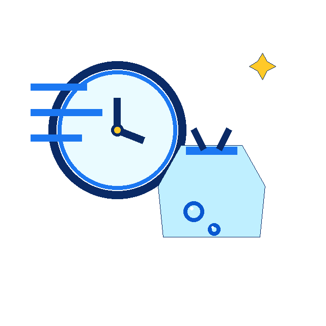

What you bring
Everyday washable clothing, towels, sheets, and similar household laundry.
Drop off everyday laundry and pick it up washed, dried, and folded. The page stays honest about rate, minimum, and turnaround until the owner confirms them.
Everyday washable clothing, towels, sheets, and similar household laundry.
Wash, dry, fold, and keep the service on the same serviced-machine reliability story as the rest of the site.
WF rate Minimum Turnaround
Drop laundry at the counter and mention anything that needs special handling.
Laundry is cleaned on serviced machines in the store.
Items are folded neatly for pickup.
Turnaround stays as WF turnaround needed until confirmed.
Service copy should stay plain and operational, with no luxury-language drift.
The page sells relief from the chore, not a fabricated premium process.

Same-day rush policy needed
As a preview, yes. For production, hard owner facts need confirmation or the page should stay held.
No. The site avoids fabricated proof and discount language.
The CTA routes through the Cents fallback path until the exact booking URL is supplied.